This package contains source components, i.e., blocks which have only output signals. These blocks are used as signal generators.
The following sources are provided to generate Real signals:
Clock Generate actual time.
Constant Generate constant signals.
Step Generate step signals.
Ramp Generate ramp signals.
Sine Generate sine signals.
ExpSine Generate exponentially damped sine signals.
Exponentials Generate a rising and falling exponential signal.
Pulse Generate pulse signals.
SawTooth Generate sawtooth signals.
Trapezoid Generate trapezoidal signals.
KinematicPTP Generate an acceleration signal to move as fast as
possible along a distance within given kinematic constraints.
TimeTable Generate a (possibly discontinuous) signal by
linear interpolation in a table.
The following sources are provided to generate Boolean signals:
BooleanConstant Generate constant signals. BooleanStep Generate step signals. BooleanPulse Generate pulse signals. SampleTrigger Generate sample triggers.
The following sources are provided to generate Integer signals:
IntegerConstant Generate constant signals. IntegerStep Generate step signals.
All sources are vectorized. This means that the output is a vector of signals. The number of outputs is in correspondance to the lenght of the parameter vectors defining the signals. Examples:
// output.signal[1] = 2*sin(2*pi*2.1);
// output.signal[2] = 3*sin(2*pi*2.3);
Modelica.Blocks.Sources.Sine s1(amplitude={2,3}, freqHz={2.1,2.2});
// output.signal[1] = 3*sin(2*pi*2.1);
// output.signal[2] = 3*sin(2*pi*2.3);
Modelica.Blocks.Sources.Sine s2(amplitude={3}, freqHz={2.1,2.3});
The first instance s1 consists of two sinusoidal output signals with the given amplitudes and frequencies. The second instance s2 consists also of two sinusoidal output signals. Since the amplitudes are the same for all output signals of s2, this value has to be provided only once. This approached is used for all parameters of signal sources: Whenever only a scalar value is provided for one parameter, then this value is used for all output signals.
All Real source signals (with the exception of the Constant source) have at least the following two parameters:
offset Value which is added to all signal values.
startTime Start time of signal. For time < startTime,
the output is set to offset.
The offset parameter is especially useful in order to shift the corresponding source, such that at initial time the system is stationary. To determine the corresponding value of offset, usually requires a trimming calculation.
Release Notes:
Copyright © 1999-2002, Modelica Association, DLR and Fraunhofer-Gesellschaft.
The Modelica package is free software; it can be redistributed and/or modified under the terms of the Modelica license, see the license conditions and the accompanying disclaimer in the documentation of package Modelica in file "Modelica/package.mo".
Modelica.Blocks.Sources.IntegerStep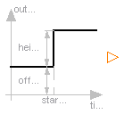
| Name | Default | Description |
|---|---|---|
| height[:] | {1} | Heights of steps |
| offset[:] | {0} | offset of output signal |
| startTime[:] | {0} | output = offset for time < startTime [s] |
block IntegerStep "Generate step signals of type Integer"
parameter Integer height[:]={1} "Heights of steps";
extends Interfaces.IntegerSignalSource(final nout=max([size(height, 1); size(
offset, 1); size(startTime, 1)]));
protected
parameter Integer p_height[nout]=(if size(height, 1) == 1 then ones(nout)*
height[1] else height);
parameter Integer p_offset[nout]=(if size(offset, 1) == 1 then ones(nout)*
offset[1] else offset);
parameter SI.Time p_startTime[nout]=(if size(startTime, 1) == 1 then ones(nout)*
startTime[1] else startTime);
equation
for i in 1:nout loop
outPort.signal[i] = p_offset[i] + (if time < p_startTime[i] then 0 else
p_height[i]);
end for;
end IntegerStep;
Modelica.Blocks.Sources.BooleanStep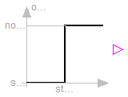
| Name | Default | Description |
|---|---|---|
| startTime[:] | {0} | Time instants of steps [s] |
| startValue[size(startTime, 1)] | fill(false, size(startTime, 1)) | Output before startTime |
block BooleanStep "Generate step signals of type Boolean"
parameter SI.Time startTime[:]={0} "Time instants of steps";
parameter Boolean startValue[size(startTime, 1)]=fill(false, size(startTime,
1)) "Output before startTime";
extends Interfaces.BooleanSignalSource(final nout=size(startTime, 1));
equation
for i in 1:nout loop
outPort.signal[i] = if time >= startTime[i] then not startValue[i] else
startValue[i];
end for;
end BooleanStep;
Modelica.Blocks.Sources.Sine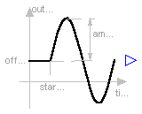
| Name | Default | Description |
|---|---|---|
| amplitude[:] | {1} | Amplitudes of sine waves |
| freqHz[:] | {1} | Frequencies of sine waves [Hz] |
| phase[:] | {0} | Phases of sine waves [rad] |
| offset[:] | {0} | Offsets of output signals |
| startTime[:] | {0} | Output = offset for time < startTime [s] |
block Sine "Generate sine signals"
parameter Real amplitude[:]={1} "Amplitudes of sine waves";
parameter SI.Frequency freqHz[:]={1} "Frequencies of sine waves";
parameter SI.Angle phase[:]={0} "Phases of sine waves";
parameter Real offset[:]={0} "Offsets of output signals";
parameter SI.Time startTime[:]={0} "Output = offset for time < startTime";
extends Interfaces.MO(final nout=max([size(amplitude, 1); size(freqHz, 1); size(
phase, 1); size(offset, 1); size(startTime, 1)]));
protected
constant Real pi=Modelica.Constants.pi;
parameter Real p_amplitude[nout]=(if size(amplitude, 1) == 1 then ones(nout)*
amplitude[1] else amplitude);
parameter Real p_freqHz[nout]=(if size(freqHz, 1) == 1 then ones(nout)*freqHz
[1] else freqHz);
parameter Real p_phase[nout]=(if size(phase, 1) == 1 then ones(nout)*phase[1]
else phase);
parameter Real p_offset[nout]=(if size(offset, 1) == 1 then ones(nout)*offset
[1] else offset);
parameter SI.Time p_startTime[nout]=(if size(startTime, 1) == 1 then ones(nout)*
startTime[1] else startTime);
equation
for i in 1:nout loop
outPort.signal[i] = p_offset[i] + (if time < p_startTime[i] then 0 else
p_amplitude[i]*Modelica.Math.sin(2*pi*p_freqHz[i]*(time - p_startTime[i])
+ p_phase[i]));
end for;
end Sine;
Modelica.Blocks.Sources.Clock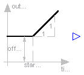
| Name | Default | Description |
|---|---|---|
| offset[:] | {0} | Offsets of output signals |
| startTime[:] | {0} | Output = offset for time < startTime [s] |
block Clock "Generate actual time signals "
parameter Real offset[:]={0} "Offsets of output signals";
parameter SI.Time startTime[:]={0} "Output = offset for time < startTime";
extends Interfaces.MO(final nout=max([size(offset, 1); size(startTime, 1)]));
protected
parameter Real p_offset[nout]=(if size(offset, 1) == 1 then ones(nout)*offset
[1] else offset);
parameter SI.Time p_startTime[nout]=(if size(startTime, 1) == 1 then ones(nout)*
startTime[1] else startTime);
equation
for i in 1:nout loop
outPort.signal[i] = p_offset[i] + (if time < p_startTime[i] then 0 else
time - p_startTime[i]);
end for;
end Clock;
Modelica.Blocks.Sources.Constant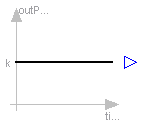
| Name | Default | Description |
|---|---|---|
| k[:] | {1} | Constant output values |
block Constant "Generate constant signals of type Real"
parameter Real k[:]={1} "Constant output values";
extends Interfaces.MO(final nout=size(k, 1));
equation
outPort.signal = k;
end Constant;
Modelica.Blocks.Sources.Step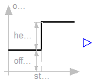
| Name | Default | Description |
|---|---|---|
| height[:] | {1} | Heights of steps |
| offset[:] | {0} | offset of output signal |
| startTime[:] | {0} | output = offset for time < startTime [s] |
block Step "Generate step signals of type Real"
parameter Real height[:]={1} "Heights of steps";
extends Interfaces.SignalSource(final nout=max([size(height, 1); size(offset, 1);
size(startTime, 1)]));
protected
parameter Real p_height[nout]=(if size(height, 1) == 1 then ones(nout)*height
[1] else height);
parameter Real p_offset[nout]=(if size(offset, 1) == 1 then ones(nout)*offset
[1] else offset);
parameter SI.Time p_startTime[nout]=(if size(startTime, 1) == 1 then ones(nout)*
startTime[1] else startTime);
equation
for i in 1:nout loop
outPort.signal[i] = p_offset[i] + (if time < p_startTime[i] then 0 else
p_height[i]);
end for;
end Step;
Modelica.Blocks.Sources.Ramp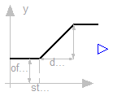
| Name | Default | Description |
|---|---|---|
| height[:] | {1} | Heights of ramps |
| duration[:] | {2} | Durations of ramps |
| offset[:] | {0} | Offsets of output signals |
| startTime[:] | {0} | Output = offset for time < startTime [s] |
block Ramp "Generate ramp signals"
parameter Real height[:]={1} "Heights of ramps";
parameter Real duration[:](min=Modelica.Constants.small) = {2}
"Durations of ramps";
parameter Real offset[:]={0} "Offsets of output signals";
parameter SI.Time startTime[:]={0} "Output = offset for time < startTime";
extends Interfaces.MO(final nout=max([size(height, 1); size(duration, 1); size(
offset, 1); size(startTime, 1)]));
protected
parameter Real p_height[nout]=(if size(height, 1) == 1 then ones(nout)*height
[1] else height);
parameter Real p_duration[nout]=(if size(duration, 1) == 1 then ones(nout)*
duration[1] else duration);
parameter Real p_offset[nout]=(if size(offset, 1) == 1 then ones(nout)*offset
[1] else offset);
parameter SI.Time p_startTime[nout]=(if size(startTime, 1) == 1 then ones(nout)*
startTime[1] else startTime);
equation
for i in 1:nout loop
outPort.signal[i] = p_offset[i] + (if time < p_startTime[i] then 0 else if
time < (p_startTime[i] + p_duration[i]) then (time - p_startTime[i])*
p_height[i]/p_duration[i] else p_height[i]);
end for;
end Ramp;
Modelica.Blocks.Sources.ExpSine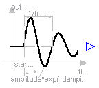
| Name | Default | Description |
|---|---|---|
| amplitude[:] | {1} | Amplitudes of sine waves |
| freqHz[:] | {2} | Frequencies of sine waves [Hz] |
| phase[:] | {0} | Phases of sine waves [rad] |
| damping[:] | {1} | Damping coefficients of sine waves [s-1] |
| offset[:] | {0} | Offsets of output signals |
| startTime[:] | {0} | Output = offset for time < startTime [s] |
block ExpSine "Generate exponentially damped sine signals"
parameter Real amplitude[:]={1} "Amplitudes of sine waves";
parameter SI.Frequency freqHz[:]={2} "Frequencies of sine waves";
parameter SI.Angle phase[:]={0} "Phases of sine waves";
parameter SI.Damping damping[:]={1} "Damping coefficients of sine waves";
parameter Real offset[:]={0} "Offsets of output signals";
parameter SI.Time startTime[:]={0} "Output = offset for time < startTime";
extends Interfaces.MO(final nout=max([size(amplitude, 1); size(freqHz, 1); size(
phase, 1); size(damping, 1); size(offset, 1); size(startTime, 1)]));
protected
constant Real pi=Modelica.Constants.pi;
parameter Real p_amplitude[nout]=(if size(amplitude, 1) == 1 then ones(nout)*
amplitude[1] else amplitude);
parameter Real p_freqHz[nout]=(if size(freqHz, 1) == 1 then ones(nout)*freqHz
[1] else freqHz);
parameter Real p_phase[nout]=(if size(phase, 1) == 1 then ones(nout)*phase[1]
else phase);
parameter Real p_damping[nout]=(if size(damping, 1) == 1 then ones(nout)*
damping[1] else damping);
parameter Real p_offset[nout]=(if size(offset, 1) == 1 then ones(nout)*offset
[1] else offset);
parameter SI.Time p_startTime[nout]=(if size(startTime, 1) == 1 then ones(nout)*
startTime[1] else startTime);
equation
for i in 1:nout loop
outPort.signal[i] = p_offset[i] + (if time < p_startTime[i] then 0 else
p_amplitude[i]*Modelica.Math.exp(-(time - p_startTime[i])*p_damping[i])*
Modelica.Math.sin(2*pi*p_freqHz[i]*(time - p_startTime[i]) + p_phase[i]))
;
end for;
end ExpSine;
Modelica.Blocks.Sources.Exponentials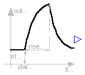
| Name | Default | Description |
|---|---|---|
| outMax[:] | {1} | Height of output for infinite riseTime |
| riseTime[:] | {0.5} | Rise time [s] |
| riseTimeConst[:] | {0.1} | Rise time constant [s] |
| fallTimeConst[:] | riseTimeConst | Fall time constant [s] |
| offset[:] | {0} | Offsets of output signals |
| startTime[:] | {0} | Output = offset for time < startTime [s] |
block Exponentials "Generate a rising and falling exponential signal"
parameter Real outMax[:]={1} "Height of output for infinite riseTime";
parameter SI.Time riseTime[:](min=0) = {0.5} "Rise time";
parameter SI.Time riseTimeConst[:](min=Modelica.Constants.small) = {0.1}
"Rise time constant";
parameter SI.Time fallTimeConst[:](min=Modelica.Constants.small) = riseTimeConst
"Fall time constant";
parameter Real offset[:]={0} "Offsets of output signals";
parameter SI.Time startTime[:]={0} "Output = offset for time < startTime";
extends Interfaces.MO(final nout=max([size(outMax, 1); size(riseTime, 1); size(
riseTimeConst, 1); size(fallTimeConst, 1); size(offset, 1); size(
startTime, 1)]));
protected
parameter Real p_outMax[nout]=(if size(outMax, 1) == 1 then ones(nout)*outMax
[1] else outMax);
parameter SI.Time p_riseTime[nout]=(if size(riseTime, 1) == 1 then ones(nout)*
riseTime[1] else riseTime);
parameter SI.Time p_riseTimeConst[nout]=(if size(riseTimeConst, 1) == 1 then ones(
nout)*riseTimeConst[1] else riseTimeConst);
parameter SI.Time p_fallTimeConst[nout]=(if size(fallTimeConst, 1) == 1 then ones(
nout)*fallTimeConst[1] else fallTimeConst);
parameter Real p_offset[nout]=(if size(offset, 1) == 1 then ones(nout)*offset
[1] else offset);
parameter SI.Time p_startTime[nout]=(if size(startTime, 1) == 1 then ones(nout)*
startTime[1] else startTime);
Real y_riseTime[nout];
equation
for i in 1:nout loop
y_riseTime[i] = p_outMax[i]*(1 - Modelica.Math.exp(-p_riseTime[i]/
p_riseTimeConst[i]));
outPort.signal[i] = p_offset[i] + (if (time < p_startTime[i]) then 0 else
if (time < (p_startTime[i] + p_riseTime[i])) then p_outMax[i]*(1 -
Modelica.Math.exp(-(time - p_startTime[i])/p_riseTimeConst[i])) else
y_riseTime[i]*Modelica.Math.exp(-(time - p_startTime[i] - p_riseTime[i])/
p_fallTimeConst[i]));
end for;
end Exponentials;
Modelica.Blocks.Sources.Pulse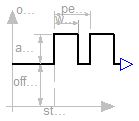
| Name | Default | Description |
|---|---|---|
| amplitude[:] | {1} | Amplitudes of pulses |
| width[:] | {50} | Widths of pulses in % of periods |
| period[:] | {1} | Times for one period [s] |
| offset[:] | {0} | Offsets of output signals |
| startTime[:] | {0} | Output = offset for time < startTime [s] |
block Pulse "Generate pulse signals of type Real"
parameter Real amplitude[:]={1} "Amplitudes of pulses";
parameter Real width[:](
final min=Modelica.Constants.small,
final max=100) = {50} "Widths of pulses in % of periods";
parameter SI.Time period[:](final min=Modelica.Constants.small) = {1}
"Times for one period";
parameter Real offset[:]={0} "Offsets of output signals";
parameter SI.Time startTime[:]={0} "Output = offset for time < startTime";
extends Interfaces.MO(final nout=max([size(amplitude, 1); size(width, 1); size(
period, 1); size(offset, 1); size(startTime, 1)]));
protected
parameter Real p_amplitude[nout]=(if size(amplitude, 1) == 1 then ones(nout)*
amplitude[1] else amplitude);
parameter SI.Time p_period[nout]=(if size(period, 1) == 1 then ones(nout)*period[1]
else period);
parameter SI.Time p_width[nout]=diagonal(p_period)*(if size(width, 1) == 1 then ones
(nout)*width[1] else width)/100 "Width of one pulse";
parameter Real p_offset[nout]=(if size(offset, 1) == 1 then ones(nout)*offset
[1] else offset);
parameter SI.Time p_startTime[nout]=(if size(startTime, 1) == 1 then ones(nout)*
startTime[1] else startTime);
SI.Time T0[nout](final start=p_startTime) "Start time of current period";
equation
for i in 1:nout loop
when sample(p_startTime[i], p_period[i]) then
T0[i] = time;
end when;
outPort.signal[i] = p_offset[i] + (if time < p_startTime[i] or time >= T0[i
] + p_width[i] then 0 else p_amplitude[i]);
end for;
end Pulse;
Modelica.Blocks.Sources.SawTooth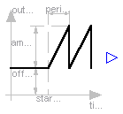
| Name | Default | Description |
|---|---|---|
| amplitude[:] | {1} | Amplitudes of saw tooths |
| period[:] | {1} | Times for one period [s] |
| offset[:] | {0} | Offsets of output signals |
| startTime[:] | {0} | Output = offset for time < startTime [s] |
block SawTooth "Generate saw tooth signals"
parameter Real amplitude[:]={1} "Amplitudes of saw tooths";
parameter SI.Time period[:](final min=Modelica.Constants.small) = {1}
"Times for one period";
parameter Real offset[:]={0} "Offsets of output signals";
parameter SI.Time startTime[:]={0} "Output = offset for time < startTime";
extends Interfaces.MO(final nout=max([size(amplitude, 1); size(period, 1); size(
offset, 1); size(startTime, 1)]));
protected
parameter Real p_amplitude[nout]=(if size(amplitude, 1) == 1 then ones(nout)*
amplitude[1] else amplitude);
parameter SI.Time p_period[nout]=(if size(period, 1) == 1 then ones(nout)*period[1]
else period);
parameter Real p_offset[nout]=(if size(offset, 1) == 1 then ones(nout)*offset
[1] else offset);
parameter SI.Time p_startTime[nout]=(if size(startTime, 1) == 1 then ones(nout)*
startTime[1] else startTime);
SI.Time T0[nout](final start=p_startTime) "Start time of current period";
equation
for i in 1:nout loop
when sample(p_startTime[i], p_period[i]) then
T0[i] = time;
end when;
outPort.signal[i] = p_offset[i] + (if time < p_startTime[i] then 0 else (
p_amplitude[i]/p_period[i])*(time - T0[i]));
end for;
end SawTooth;
Modelica.Blocks.Sources.Trapezoid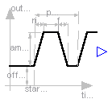
| Name | Default | Description |
|---|---|---|
| amplitude[:] | {1} | Amplitudes of trapezoids |
| rising[:] | {0} | Rising durations of trapezoids [s] |
| width[:] | {0.5} | Width durations of trapezoids [s] |
| falling[:] | {0} | Falling durations of trapezoids [s] |
| period[:] | {1} | Time for one period [s] |
| nperiod[:] | {-1} | Number of periods (< 0 means infinite number of periods) |
| offset[:] | {0} | Offsets of output signals |
| startTime[:] | {0} | Output = offset for time < startTime [s] |
block Trapezoid "Generate trapezoidal signals of type Real"
parameter Real amplitude[:]={1} "Amplitudes of trapezoids";
parameter SI.Time rising[:](final min=0) = {0} "Rising durations of trapezoids";
parameter SI.Time width[:](final min=0) = {0.5} "Width durations of trapezoids";
parameter SI.Time falling[:](final min=0) = {0} "Falling durations of trapezoids";
parameter SI.Time period[:](final min=Modelica.Constants.small) = {1}
"Time for one period";
parameter Integer nperiod[:]={-1}
"Number of periods (< 0 means infinite number of periods)";
parameter Real offset[:]={0} "Offsets of output signals";
parameter SI.Time startTime[:]={0} "Output = offset for time < startTime";
extends Interfaces.MO(final nout=max([size(amplitude, 1); size(rising, 1); size(
width, 1); size(falling, 1); size(period, 1); size(nperiod, 1); size(
offset, 1); size(startTime, 1)]));
protected
parameter Real p_amplitude[nout]=(if size(amplitude, 1) == 1 then ones(nout)*
amplitude[1] else amplitude);
parameter SI.Time T_rising[nout]=(if size(rising, 1) == 1 then ones(nout)*rising[1]
else rising) "End time of rising phase within one period";
parameter SI.Time T_width[nout]=T_rising + (if size(width, 1) == 1 then ones(nout)*
width[1] else width) "End time of width phase within one period";
parameter SI.Time T_falling[nout]=T_width + (if size(falling, 1) == 1 then ones(nout
)*falling[1] else falling) "End time of falling phase within one period";
parameter SI.Time p_period[nout]=(if size(period, 1) == 1 then ones(nout)*period[1]
else period) "Duration of one period";
parameter Real p_offset[nout]=(if size(offset, 1) == 1 then ones(nout)*offset
[1] else offset);
parameter SI.Time p_startTime[nout]=(if size(startTime, 1) == 1 then ones(nout)*
startTime[1] else startTime);
SI.Time T0[nout](final start=p_startTime) "Start time of current period";
Integer counter[nout](start=(if size(nperiod, 1) == 1 then ones(nout)*nperiod
[1] else nperiod)) "Period counter";
Integer counter2[nout](start=(if size(nperiod, 1) == 1 then ones(nout)*
nperiod[1] else nperiod));
equation
for i in 1:nout loop
when pre(counter2[i]) <> 0 and sample(p_startTime[i], p_period[i]) then
T0[i] = time;
counter2[i] = pre(counter[i]);
counter[i] = pre(counter[i]) - (if pre(counter[i]) > 0 then 1 else 0);
end when;
outPort.signal[i] = p_offset[i] + (if (time < p_startTime[i] or counter2[i]
== 0 or time >= T0[i] + T_falling[i]) then 0 else if (time < T0[i] +
T_rising[i]) then (time - T0[i])*p_amplitude[i]/T_rising[i] else if (time
< T0[i] + T_width[i]) then p_amplitude[i] else (T0[i] + T_falling[i] -
time)*p_amplitude[i]/(T_falling[i] - T_width[i]));
end for;
end Trapezoid;
Modelica.Blocks.Sources.KinematicPTP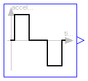
The goal is to move as fast as possible along a distance deltaq under given kinematical constraints. The distance can be a positional or angular range. In robotics such a movement is called PTP (Point-To-Point). This source block generates the acceleration qdd of this signal as output. After integrating the output two times, the position q is obtained. The signal is constructed in such a way that it is not possible to move faster, given the maximally allowed velocity qd_max and the maximally allowed acceleration qdd_max.
If several distances are given (vector deltaq has more than 1 element), an acceleration output vector is constructed such that all signals are in the same periods in the acceleration, constant velocity and deceleration phase. This means that only one of the signals is at its limits whereas the others are sychnronized in such a way that the end point is reached at the same time instant.
This element is useful to generate a reference signal for a controller which controls a drive train or in combination with model Modelica.Mechanics.Rotational.Accelerate to drive a flange according to a given acceleration.
Release Notes:
| Name | Default | Description |
|---|---|---|
| deltaq[:] | {1} | Distance to move |
| qd_max[:] | {1} | Maximum velocities der(q) |
| qdd_max[:] | {1} | Maximum accelerations der(qd) |
| startTime | 0 | Time instant at which movement starts [s] |
block KinematicPTP
"Move as fast as possible along a distance within given kinematic constraints"
parameter Real deltaq[:]={1} "Distance to move";
parameter Real qd_max[:](final min=Modelica.Constants.small) = {1}
"Maximum velocities der(q)";
parameter Real qdd_max[:](final min=Modelica.Constants.small) = {1}
"Maximum accelerations der(qd)";
parameter SI.Time startTime=0 "Time instant at which movement starts";
extends Interfaces.MO(final nout=max([size(deltaq, 1); size(qd_max, 1); size(
qdd_max, 1)]));
protected
parameter Real p_deltaq[nout]=(if size(deltaq, 1) == 1 then ones(nout)*deltaq
[1] else deltaq);
parameter Real p_qd_max[nout]=(if size(qd_max, 1) == 1 then ones(nout)*qd_max
[1] else qd_max);
parameter Real p_qdd_max[nout]=(if size(qdd_max, 1) == 1 then ones(nout)*
qdd_max[1] else qdd_max);
Real sd_max;
Real sdd_max;
Real sdd;
Real aux1[nout];
Real aux2[nout];
SI.Time Ta1;
SI.Time Ta2;
SI.Time Tv;
SI.Time Te;
Boolean noWphase;
equation
for i in 1:nout loop
aux1[i] = p_deltaq[i]/p_qd_max[i];
aux2[i] = p_deltaq[i]/p_qdd_max[i];
end for;
sd_max = 1/max(abs(aux1));
sdd_max = 1/max(abs(aux2));
Ta1 = sqrt(1/sdd_max);
Ta2 = sd_max/sdd_max;
noWphase = Ta2 >= Ta1;
Tv = if noWphase then Ta1 else 1/sd_max;
Te = if noWphase then Ta1 + Ta1 else Tv + Ta2;
// path-acceleration
sdd = if time < startTime then 0 else ((if noWphase then (if time < Ta1 +
startTime then sdd_max else (if time < Te + startTime then -sdd_max else 0)
) else (if time < Ta2 + startTime then sdd_max else (if time < Tv +
startTime then 0 else (if time < Te + startTime then -sdd_max else 0)))));
// acceleration
outPort.signal = p_deltaq*sdd;
end KinematicPTP;
Modelica.Blocks.Sources.TimeTable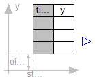
This block generates an output signal by linear interpolation in a table. The time points and function values are stored in a matrix table[i,j], where the first column table[:,1] contains the time points and the second column contains the data to be interpolated. The table interpolation has the following proporties:
Example:
table = [0 0
1 0
1 1
2 4
3 9
4 16]
If, e.g., time = 1.0, the output y = 0.0 (before event), 1.0 (after event)
e.g., time = 1.5, the output y = 2.5,
e.g., time = 2.0, the output y = 4.0,
e.g., time = 5.0, the output y = 23.0 (i.e. extrapolation).
Release Notes:
parameter Real table[:, :]=[0, 0; 1, 1; 2, 4];
to
parameter Real table[:, 2]=[0, 0; 1, 1; 2, 4];
| Name | Default | Description |
|---|---|---|
| table[:, 2] | [0, 0; 1, 1; 2, 4] | Table matrix (time = first column) |
| offset[1] | {0} | Offset of output signal |
| startTime[1] | {0} | Output = offset for time < startTime [s] |
block TimeTable
"Generate a (possibly discontinuous) signal by linear interpolation in a table"
parameter Real table[:, 2]=[0, 0; 1, 1; 2, 4]
"Table matrix (time = first column)";
parameter Real offset[1]={0} "Offset of output signal";
parameter SI.Time startTime[1]={0} "Output = offset for time < startTime";
extends Interfaces.MO(final nout=1);
protected
Real a "Interpolation coefficients a of actual interval (y=a*x+b)";
Real b "Interpolation coefficients b of actual interval (y=a*x+b)";
Integer last(start=1) "Last used lower grid index";
SI.Time nextEvent(start=0) "Next event instant";
function getInterpolationCoefficients
"Determine interpolation coefficients and next time event"
input Real table[:, 2] "Table for interpolation";
input Real offset "y-offset";
input Real startTime "time-offset";
input Real t "Actual time instant";
input Integer last "Last used lower grid index";
input Real TimeEps "Relative epsilon to check for identical time instants";
output Real a "Interpolation coefficients a (y=a*x + b)";
output Real b "Interpolation coefficients b (y=a*x + b)";
output Real nextEvent "Next event instant";
output Integer next "New lower grid index";
protected
Integer columns=2 "Column to be interpolated";
Integer ncol=2 "Number of columns to be interpolated";
Integer nrow=size(table, 1) "Number of table rows";
Integer next0;
Real tp;
Real dt;
algorithm
next := last;
nextEvent := t - TimeEps*abs(t);
// in case there are no more time events
tp := t + TimeEps*abs(t) - startTime;
if tp < 0.0 then
// First event not yet reached
nextEvent := startTime;
a := 0;
b := offset;
elseif nrow < 2 then
// Special action if table has only one row
a := 0;
b := offset + table[1, columns];
else
// Find next time event instant. Note, that two consecutive time instants
// in the table may be identical due to a discontinuous point.
while next < nrow and tp >= table[next, 1] loop
next := next + 1;
end while;
// Define next time event, if last table entry not reached
if next < nrow then
nextEvent := startTime + table[next, 1];
end if;
// Determine interpolation coefficients
next0 := next - 1;
dt := table[next, 1] - table[next0, 1];
if dt <= TimeEps*abs(table[next, 1]) then
// Interpolation interval is not big enough, use "next" value
a := 0;
b := offset + table[next, columns];
else
a := (table[next, columns] - table[next0, columns])/dt;
b := offset + table[next0, columns] - a*table[next0, 1];
end if;
end if;
// Take into account startTime "a*(time - startTime) + b"
b := b - a*startTime;
end getInterpolationCoefficients;
algorithm
when {time >= pre(nextEvent),initial()} then
(a,b,nextEvent,last) := getInterpolationCoefficients(table, scalar(offset)
, scalar(startTime), time, last, 100*Modelica.Constants.eps);
end when;
equation
outPort.signal[1] = a*time + b;
end TimeTable;
Modelica.Blocks.Sources.BooleanConstant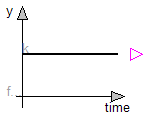
| Name | Default | Description |
|---|---|---|
| k[:] | {true} | Constant output values |
block BooleanConstant "Generate constant signals of type Boolean"
parameter Boolean k[:]={true} "Constant output values";
extends Interfaces.BooleanSignalSource(final nout=size(k, 1));
equation
outPort.signal = k;
end BooleanConstant;
Modelica.Blocks.Sources.BooleanPulse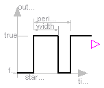
| Name | Default | Description |
|---|---|---|
| width[:] | {50} | Widths of pulses in % of period |
| period[:] | {1} | Times for one period [s] |
| startTime[:] | {0} | Iime instants of first pulse [s] |
block BooleanPulse "Generate pulse signals of type Boolean"
parameter Real width[:](
final min=Modelica.Constants.small,
final max=100) = {50} "Widths of pulses in % of period";
parameter SI.Time period[:](final min=Modelica.Constants.small) = {1}
"Times for one period";
parameter SI.Time startTime[:]={0} "Iime instants of first pulse";
extends Interfaces.BooleanSignalSource(final nout=max([size(width, 1); size(period
, 1); size(startTime, 1)]));
protected
parameter SI.Time p_period[nout]=(if size(period, 1) == 1 then ones(nout)*period[1]
else period);
parameter SI.Time Twidth[nout]=diagonal(p_period)*(if size(width, 1) == 1 then ones(
nout)*width[1] else width)/100 "width of one pulse";
parameter SI.Time p_startTime[nout]=(if size(startTime, 1) == 1 then ones(nout)*
startTime[1] else startTime);
SI.Time T0[nout](final start=p_startTime) "Start time of current period";
equation
for i in 1:nout loop
when sample(p_startTime[i], p_period[i]) then
T0[i] = time;
end when;
outPort.signal[i] = time >= T0[i] and time < T0[i] + Twidth[i];
end for;
end BooleanPulse;
Modelica.Blocks.Sources.SampleTrigger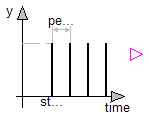
| Name | Default | Description |
|---|---|---|
| period[:] | {0.01} | Sample periods [s] |
| startTime[:] | {0} | Time instants of first sample triggers [s] |
block SampleTrigger "Generate sample trigger signals"
parameter SI.Time period[:](final min=Modelica.Constants.small) = {0.01}
"Sample periods";
parameter SI.Time startTime[:]={0} "Time instants of first sample triggers";
extends Interfaces.BooleanSignalSource(final nout=max([size(period, 1); size(
startTime, 1)]));
protected
parameter SI.Time p_period[nout]=(if size(period, 1) == 1 then ones(nout)*period[1]
else period);
parameter SI.Time p_startTime[nout]=(if size(startTime, 1) == 1 then ones(nout)*
startTime[1] else startTime);
equation
for i in 1:nout loop
outPort.signal[i] = sample(p_startTime[i], p_period[i]);
end for;
end SampleTrigger;
Modelica.Blocks.Sources.IntegerConstant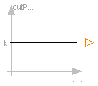
| Name | Default | Description |
|---|---|---|
| k[:] | {1} | Constant output values |
block IntegerConstant "Generate constant signals of type Integer"
parameter Integer k[:]={1} "Constant output values";
extends Interfaces.IntegerMO(final nout=size(k, 1));
equation
outPort.signal = k;
end IntegerConstant;